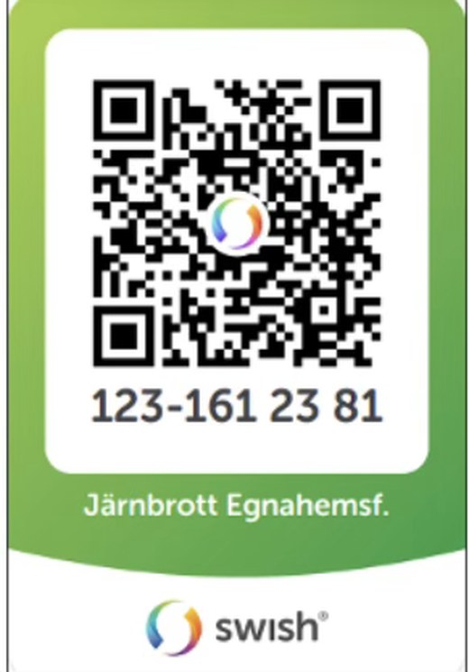

Medlemskap i egnahemsföreningen
Föreningen finns till för oss i Järnbrott och kommer finnas kvar så länge vi tillsammans har intresse av att behålla den. En viktig indikation för detta är antalet medlemmar vi har, och vi hoppas att alla i området också vill vara medlemmar.
Avgift och betalning
- Medlemsavgift inklusive servisskadefond 200 kr
- Enbart medlem, för de som inte har egen servis 100 kr
Swish 123 161 23 81
Bankgiro 198–9326
Märk inbetalningen med din gatuadress.
20 november är sista dagen att betala in årets medlemsavgift. Alla inbetalningar efter det räknas till nästa år.
Har du frågor om medlemsavgiften når du kassören, och övriga frågor går till ordföranden. Numren står på kontaktsidan.

Servisskadeersättning
Varje år är det några hushåll i området som drabbas av stora kostnader på grund av skada på servisledningen. Föreningen förvaltar därför en servisskadefond, och som medlem kan du få ersättning ur den.
Ersättningen ligger på 7,5 procent av ett prisbasbelopp per skada. För att få ersättning ska du ha betalat medlemsavgiften både föregående år och innevarande år innan ansökan skickas in.
Med servisledning menas vatten- och avloppsledningar utanför huskroppen inom tomtgränsen, dock inte dräneringsrör. Ersättning utgår för reparation av ledningen och för den schaktning som krävs, men inte för att återställa trädgården.
Får du en skada ska du kontakta Rune Fredriksson på 0733-70 40 16 direkt. Skadan behöver besiktigas innan styrelsen kan besluta om bidrag.
De fullständiga reglerna står i föreningens stadgar, paragraf 15.